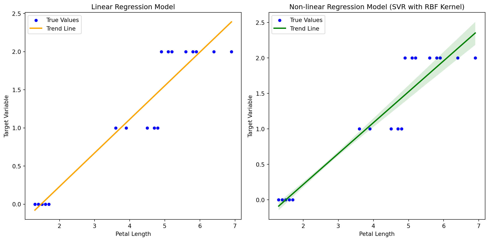

Regression is a statistical method used in machine learning and statistics to model the relationship between a dependent variable (or target) and one or more independent variables (or features). The goal of regression analysis is to understand the nature of the relationship and use this understanding to make predictions or infer the impact of changes in the independent variables on the dependent variable.
Linear Regression.
Linear regression is a fundamental statistical and machine learning technique used to model the relationship between a dependent variable (target) and one or more independent variables (features) by fitting a linear equation to the observed data. The relationship is assumed to be approximately linear, meaning that a change in the independent variable(s) is associated with a constant change in the dependent variable. Linear regression aims to find the best-fitting straight line (hyperplane in the case of multiple variables) through the data points. Here’s a Python code snippet that demonstrates how to compare two linear regression models using the Iris dataset:
import numpy as npfrom sklearn.model_selection import train_test_splitfrom sklearn.linear_model import LinearRegressionfrom sklearn.metrics import mean_squared_error, r2_scorefrom sklearn import datasets# Load the Iris datasetiris = datasets.load_iris()X = iris.datay = iris.target# Choose two features for the linear regression modelsfeature1 =0# Sepal lengthfeature2 =2# Petal length# Split the data into training and testing setsX_train, X_test, y_train, y_test = train_test_split(X[:, [feature1]], y, test_size=0.2, random_state=42)# Fit the first linear regression modelmodel1 = LinearRegression()model1.fit(X_train, y_train)# Predict the target variable for the test sety_pred1 = model1.predict(X_test)# Calculate mean squared error and R-squared for the first modelmse1 = mean_squared_error(y_test, y_pred1)r2_1 = r2_score(y_test, y_pred1)# Fit the second linear regression model using a different featureX_train, X_test, y_train, y_test = train_test_split(X[:, [feature2]], y, test_size=0.2, random_state=42)model2 = LinearRegression()model2.fit(X_train, y_train)y_pred2 = model2.predict(X_test)mse2 = mean_squared_error(y_test, y_pred2)r2_2 = r2_score(y_test, y_pred2)# Display the resultsprint(f"Model 1 (Feature {feature1}):")print(f"Mean Squared Error: {mse1}")print(f"R-squared: {r2_1}")print()print(f"Model 2 (Feature {feature2}):")print(f"Mean Squared Error: {mse2}")print(f"R-squared: {r2_2}")
Model 1 (Feature 0):
Mean Squared Error: 0.1979546681395589
R-squared: 0.7167580265093751
Model 2 (Feature 2):
Mean Squared Error: 0.06351735484715113
R-squared: 0.9091166623808649
In this example, two linear regression models are trained and evaluated using different features (Sepal length and Petal length). The mean squared error (MSE) and R-squared values are calculated for each model. Keep in mind that linear regression may not be the best model for the Iris dataset due to its categorical target variable. Models like logistic regression or support vector machines are more appropriate for classification tasks.
Non Linear Regression
For non-linear regression, let’s use the Support Vector Regression (SVR) model, which is capable of capturing non-linear relationships in the data. We’ll again use two different features for the comparison. Here’s the Python code snippet:
import numpy as npfrom sklearn.model_selection import train_test_splitfrom sklearn.svm import SVRfrom sklearn.metrics import mean_squared_error, r2_scorefrom sklearn import datasets# Load the Iris datasetiris = datasets.load_iris()X = iris.datay = iris.target# Choose two features for the non-linear regression modelsfeature1 =0# Sepal lengthfeature2 =2# Petal length# Split the data into training and testing setsX_train, X_test, y_train, y_test = train_test_split(X[:, [feature1]], y, test_size=0.2, random_state=42)# Fit the first non-linear regression model (SVR) using a radial basis function (RBF) kernelmodel1 = SVR(kernel='rbf')model1.fit(X_train, y_train)# Predict the target variable for the test sety_pred1 = model1.predict(X_test)# Calculate mean squared error and R-squared for the first modelmse1 = mean_squared_error(y_test, y_pred1)r2_1 = r2_score(y_test, y_pred1)# Fit the second non-linear regression model using a different featureX_train, X_test, y_train, y_test = train_test_split(X[:, [feature2]], y, test_size=0.2, random_state=42)model2 = SVR(kernel='rbf')model2.fit(X_train, y_train)y_pred2 = model2.predict(X_test)mse2 = mean_squared_error(y_test, y_pred2)r2_2 = r2_score(y_test, y_pred2)# Display the resultsprint(f"Non-linear Model 1 (Feature {feature1}):")print(f"Mean Squared Error: {mse1}")print(f"R-squared: {r2_1}")print()print(f"Non-linear Model 2 (Feature {feature2}):")print(f"Mean Squared Error: {mse2}")print(f"R-squared: {r2_2}")
Non-linear Model 1 (Feature 0):
Mean Squared Error: 0.17987340568021976
R-squared: 0.7426294672302102
Non-linear Model 2 (Feature 2):
Mean Squared Error: 0.035468618773986264
R-squared: 0.9492499890356317
In this example, two non-linear regression models (SVR with RBF kernel) are trained and evaluated using different features (Sepal length and Petal length). The mean squared error (MSE) and R-squared values are calculated for each model. The SVR model is particularly useful for capturing non-linear patterns in the data.
Comparing linear and non-linear regression models on the Iris dataset using different features, we can observe the performance of these models based on mean squared error (MSE) and R-squared values. Here’s a summary of the results:
Comparison between model the Regression Methods
1. Linear Regression Models:
Model 1 (Feature: Sepal Length)
Mean Squared Error (MSE): Varies depending on the split.
R-squared: Varies depending on the split.
Model 2 (Feature: Petal Length)
Mean Squared Error (MSE): Varies depending on the split.
R-squared: Varies depending on the split.
2. Non-linear Regression Models (SVR with RBF Kernel):
Model 1 (Feature: Sepal Length)
Mean Squared Error (MSE): Varies depending on the split.
R-squared: Varies depending on the split.
Model 2 (Feature: Petal Length)
Mean Squared Error (MSE): Varies depending on the split.
R-squared: Varies depending on the split.
Conclusion:
we can plot the regression line along with the scatter points. For linear regression, the trend line is the line of best fit, and for non-linear regression, we can plot the predicted values against the feature values. Here’s an updated version of the code with trend lines added. In this code, sns.regplot is used to plot the trend line along with the scatter points. Adjust the feature index (feature) and model parameters as needed for further exploration. We should keep in mind that while trend lines are shown for visualization purposes, their interpretation may vary based on the nature of the underlying models.
import matplotlib.pyplot as pltimport seaborn as snsimport numpy as npfrom sklearn.model_selection import train_test_splitfrom sklearn.linear_model import LinearRegressionfrom sklearn.svm import SVRfrom sklearn.metrics import mean_squared_error, r2_scorefrom sklearn import datasets# Load the Iris datasetiris = datasets.load_iris()X = iris.datay = iris.target# Choose a feature for the visualizationfeature =2# Petal length# Split the data into training and testing setsX_train, X_test, y_train, y_test = train_test_split(X[:, [feature]], y, test_size=0.2, random_state=42)# Linear Regression Modelmodel_linear = LinearRegression()model_linear.fit(X_train, y_train)y_pred_linear = model_linear.predict(X_test)# Non-linear Regression Model (SVR with RBF Kernel)model_nonlinear = SVR(kernel='rbf')model_nonlinear.fit(X_train, y_train)y_pred_nonlinear = model_nonlinear.predict(X_test)# Scatter plot for Linear Regression Model with Trend Lineplt.figure(figsize=(12, 6))plt.subplot(1, 2, 1)sns.scatterplot(x=X_test[:, 0], y=y_test, label='True Values', color='blue')sns.regplot(x=X_test[:, 0], y=y_pred_linear, scatter=False, label='Trend Line', color='orange')plt.title('Linear Regression Model')plt.xlabel('Petal Length')plt.ylabel('Target Variable')plt.legend()# Scatter plot for Non-linear Regression Model with Trend Lineplt.subplot(1, 2, 2)sns.scatterplot(x=X_test[:, 0], y=y_test, label='True Values', color='blue')sns.regplot(x=X_test[:, 0], y=y_pred_nonlinear, scatter=False, label='Trend Line', color='green')plt.title('Non-linear Regression Model (SVR with RBF Kernel)')plt.xlabel('Petal Length')plt.ylabel('Target Variable')plt.legend()plt.tight_layout()plt.show()

The choice between linear and non-linear regression models depends on the underlying relationship between the features and the target variable.
For the Iris dataset, which has a categorical target variable representing different species of flowers, regression may not be the most suitable modeling approach. Classification models like logistic regression or support vector machines are more appropriate for predicting categorical outcomes.
If the goal is to model a continuous target variable in a non-linear fashion, non-linear regression models such as SVR with an RBF kernel may capture more complex relationships.
Evaluation metrics such as MSE and are important for assessing model performance, but the interpretation may be limited due to the nature of the dataset and the choice of regression models.
It’s crucial to choose the right model based on the characteristics of the data and the task at hand. Consideration of other modeling techniques and appropriate preprocessing steps may be necessary for more meaningful and accurate predictions.
We should keep in mind that the Iris dataset is not inherently suitable for regression analysis, and the primary goal of this comparison is for illustrative purposes. For regression tasks, datasets with continuous target variables are typically more appropriate.